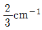
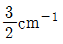
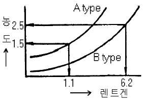
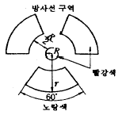
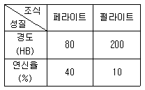
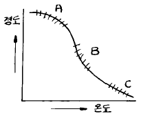

방사선비파괴검사기사(구) (2004-03-07 기출문제)
1과목: 방사선투과시험원리
1. 방사선투과사진에 나타난 결함의 농도는 2.5이고, 결함주변 배경의 농도는 2.0이다. 이 사진을 관찰하는데 투과광에 대한 산란광의 비율이 0.5(산란광의 밝기/투과광의 밝기 = 0.5)라면 겉보기 콘트라스트(contrast)는?
- 1.0
- 0.5
- 0.33
- 0.25
(정답률: 알수없음)

2. 자분탐상검사에 영향을 미치는 자분의 성질 중 해당되지 않는 것은?
- 자분의 색조와 휘도
- 자분의 전기적 성질
- 자분의 입도
- 자분의 비중
(정답률: 알수없음)
3. Cs-137의 반감기는?
- 30.3년
- 74.5일
- 127일
- 5.3년
(정답률: 알수없음)
4. 방사성 동위원소의 강도가 20μCi라면 몇 Bq인가?
- 74kBq
- 740kBq
- 74mBq
- 740mBq
(정답률: 알수없음)
5. 비파괴검사법 중 결함 발생중에는 검출이 가능하지만 결함이 발생한 후에는 검출되지 않는 시험은?
- 음향방출(Acoustic Emission) 시험
- 초음파탐상(Ultrasonic) 시험
- 와전류탐상(Eddy Current) 시험
- 방사선투과(Radiographic) 시험
(정답률: 알수없음)
6. 방사선투과사진 상(像)에서의 농도의 비균일성에 대한 시각적 느낌(visual impression)을 무엇이라 하는가?
- 필름의 콘트라스트(film contrast)
- 필름의 입상성(film graininess)
- 필름의 스펙트럼(film spectrum)
- 필름의 그레디언트(film gradient)
(정답률: 알수없음)
7. X선관의 관전류를 형성하는 운반자(Carrier)는?
- 광전자
- 이온
- 열전자
- 고전압 발생장치
(정답률: 알수없음)
8. 다음 중 필름을 개봉해도 필름에 영향을 미치지 않는 환경은?
- 포르말린 증기가 발생하는 장소
- 황화수소가 발생하는 장소
- 암모니아 가스가 발생하는 장소
- 헬륨 가스가 발생하는 장소
(정답률: 알수없음)
9. 다음 중 방사선투과사진 촬영시 후방산란선의 영향이 가장 큰 경우는?
- 필름카세트 뒷면에 납판이 있을 때
- 조사각도가 작은 콜리메터 사용시
- 방사선의 조사면적이 클수록
- 형광증감지보다 금속증감지를 사용시
(정답률: 알수없음)
10. 다음 X선 발생장치 사용에 대한 안전상의 주의점을 설명한 것 중 틀린 것은?
- 조리개와 필터는 산란선이나 연X선의 피폭을 방지하기 위해 부착한다.
- X선 발생장치의 제어기는 고열이 발생하기 때문에 사용후 커버를 벗겨서 냉각시켜 준다.
- X선 장치 사용중에는 서베이미터 및 개인 안전장구를 휴대해야 한다.
- X선 발생장치의 안전확인은 복수의 방법으로 행한다.
(정답률: 알수없음)
11. ASME code에 의거 투과도계를 사용할 때 1-2T의 투과도계 감도는?
- 0.7％
- 1％
- 1.4％
- 2％
(정답률: 알수없음)
12. 다음 중 미소 결함에 대한 투과사진의 콘트라스트를 높이는데 필요한 경우는?
- 가능한한 γ(gamma)값이 낮은 X-선 필름을 사용한다.
- 가능한한 사진농도가 낮게 촬영한다.
- 가능한한 높은 X-선 관전압을 사용하여 촬영한다.
- 가능한한 산란선이 적도록 노력한다.
(정답률: 알수없음)
13. 방사선투과시험 적용의 제한에 대한 설명으로 틀린 것은?
- 결함의 형태에 따라 검출이 곤란한 것이 있다.
- 시험 두께와 무관하게 적용이 가능하며, 차폐를 해야한다.
- 두꺼운 시험체내의 밀착균열(Tight Crack)의 경우 검출되지 않는다.
- 방사선에 의한 인체의 장해가 발생할 수 있다.
(정답률: 알수없음)
14. 흡수계수 μ가 2㎝-1인 물체내에 공동성(空洞性) 결함에 의한 농도차 ㅿD가 0.01 이라고 한다. 0.03의 ㅿD를 얻기 위한 물질의 μ값은?


- 3㎝-1
- 6㎝-1
(정답률: 알수없음)
15. 방사선투과사진의 음영형성의 기하학적 원리에 대한 설명으로 올바른 것은?
- 선원과 시험체간 거리는 가능한 한 작아야 한다.
- 투과되는 방사선과 시험체의 표면은 가능한 한 수직이어야 한다.
- 선원의 초점크기는 음영형성의 기하학적 원리와 관계가 없다.
- 필름과 시험체간 거리는 가능한 한 멀어야 한다.
(정답률: 알수없음)
16. X선이나 γ선이 물질을 투과할 때 일어나는 현상이 아닌 것은?
- 특성 X선이 생긴다.
- 산란 X선이 생긴다.
- 이온화 현상이 생긴다.
- 2.02MeV 이상의 에너지인 경우 음전자와 양전자가 생성된다.
(정답률: 알수없음)
17. 비파괴검사법 중 표면 결함 검출법만으로 짝지어진 것은?
- 침투탐상검사, 누설탐상검사
- 자분탐상검사, 침투탐상검사
- 방사선투과검사, 초음파탐상검사
- 음향방출시험, X-선 회절분석법
(정답률: 알수없음)
18. γ선과 물질과의 상호작용에서 γ선의 에너지가 2moC2이상 이라야 일어날 수 있는 상호작용은? (단, 여기서 mo와 C는 각각 전자의 정지질량과 광속도를 나타낸다.)
- 광전 효과
- 콤프턴 산란
- 전자쌍 생성
- Auger 효과
(정답률: 알수없음)
19. 방사선투과시험에서 두께가 20밀(Mil)인 투과도계의 구멍을 볼 수 있었다. 상질 수준(Quality Level)이 2-2T라면 시험체의 두께는? (단, 사용된 투과도계의 종류는 ASME)
- 0.5인치(12.7㎜)
- 1.0인치(25.4㎜)
- 1.5인치(38.1㎜)
- 2.0인치(50.8㎜)
(정답률: 알수없음)
20. 시험체 두께가 얇은 부분이 1 반가층, 두꺼운 부분이 3반가층인 시료를 동일 강도의 X선으로 같은 시간 노출하였을 때 두 부위간의 피사체 콘트라스트는? (단, 산란선의 영향은 무시한다.)
- 2
- 4
- 6
- 8
(정답률: 알수없음)
2과목: 방사선투과검사
21. X선 필름의 자동현상처리에 관한 설명으로 틀린 것은?
- Roller rack를 정기적으로 세척
- 수시로 현상온도 점검
- 보충액을 장기간 사용할 수 있게 대량 제조
- 처리액 보충탱크에는 물에 뜨는 덮게 사용
(정답률: 알수없음)
22. 공업용 X선 발생장치의 필라멘트에 걸리는 전압의 범위로 옳은 것은?
- 8 ∼ 12 [V]
- 110 ∼ 220 [V]
- 380 ∼ 440 [V]
- 45,000 ∼ 50,000 [V]
(정답률: 알수없음)
23. 두께의 차이가 아주 심하거나 형상이 복잡한 주물 등을 방사선투과시험할 때, 종종 사용되고 있는 X-선 차폐액의 주성분으로 옳은 것은?
- 아세트산 연
- 글리세린
- 수은
- 기름
(정답률: 알수없음)
24. 결함의 직경에 따라 방사선투과사진 콘트라스트가 변하며 검고 스므스하며, 둥근 모양의 점으로 나타나는 결함은?
- 가스기공
- 수축관
- 편석
- 코어변이
(정답률: 알수없음)
25. 감마선 조사장비에서 X-선관의 후드(Hood) 및 창(Window)의 역할을 하는 것은?
- 콜리메터(Collimator)
- 가이드 튜브(Guide Tube)
- 드라이브 케이블(Drive Cable)
- 저장 용기의 앞 연결부(Connector)
(정답률: 알수없음)
26. 방사선투과검사를 할 때 필요에 따라 연박(鉛箔)증감지를 사용한다. 이 때 사용되는 연박증감지의 증감작용에 주로 관계하는 것은?
- X선 흡수로 방출된 가시선
- X선 흡수로 방출된 산란 광자
- X선 흡수로 방출된 양전자
- X선 흡수로 방출된 광전자
(정답률: 알수없음)
27. 다음 중 방사선투과시험의 콘트라스트와 관계가 없는 것은?
- 투과도계의 종류
- 시험체의 재질
- X선 필름의 입상성
- 투과 사진의 농도
(정답률: 알수없음)
28. 전자사진 촬영법에 관한 설명으로 틀린 것은?
- 전자 사진판으로는 셀레니움이 좋다.
- 대전량이 방사선의 강도에 따라 변한다.
- X선 필름에 비해 감도가 매우 나쁘다.
- X선 필름 대신에 전자 사진판을 쓴다.
(정답률: 알수없음)
29. 필름의 선택과 관련된 사항으로 바르게 기술된 것은?
- 감도가 높은 필름을 사용하면 결함의 식별이 나빠진다.
- 촬영시간을 단축하기 위해서는 감도가 낮은 필름을 사용한다.
- 고에너지에 대한 촬영일 경우 입상성이 큰 필름이 적합하다.
- 좋은 상질의 사진이 요구될 때 입상성이 큰 필름이 적합하다.
(정답률: 알수없음)
30. 다음 정착제의 성분중 현상되지 않은 AgBr의 세척 목적으로 사용되는 것은?
- Ammonium Thiosulfate
- Aluminium Chloride
- Acetic Acid
- Sodium Sulfate
(정답률: 알수없음)
31. 방사선투과시험에서 촬영배치의 경우 선원과 투과도계간 거리(L1)는 투과도계와 필름간 거리(L2)에 의해 규제받는다. 즉 L1≧mL2(단, 초점 크기를 f라 할 때 보통급의 경우 m = 2.5f), 이 경우 최대 기하학적 불선명도(㎜)는?
- 0.1
- 0.2
- 0.3
- 0.4
(정답률: 알수없음)
32. 보통 0.3㎜ 두께의 납판에 0.1㎜ 정도의 작은 구멍을 뚫어 X선 발생장치와 필름 중간 지점에 설치한 후 촬영하는 목적을 옳게 설명한 것은?
- 초점의 크기를 확인하기 위함이다.
- 연한 방사선(soft X-ray)을 여과하기 위함이다.
- 방사구로 방출되는 X선의 강도분포를 알고저 함이다.
- X선 발생장치로 방출되는 중심선의 강도를 측정하기 위함이다.
(정답률: 알수없음)
33. 수중에서의 방사선투과검사시 장치와 시험체 사이에 물이 들어가 X선 강도가 저하했을 때의 보정방법으로 틀린 것은?
- 필름의 거리를 보정한다.
- 노출 조건을 보정한다.
- 전압을 재보정한다.
- 장치와 시험체간의 거리를 보정한다.
(정답률: 알수없음)
34. 방사선투과사진의 판독에 관한 설명 중 잘못된 것은?
- 투과사진의 농도가 높은 경우 필름판독기는 밝은 것이 좋다.
- 투과사진을 관찰할 경우 직사광선이 드는 장소가 좋다.
- 투과사진의 농도가 높을 경우 장소는 어두운 곳이 좋다.
- 투과사진의 투과도계 식별도는 농도와 관계가 있다.
(정답률: 알수없음)
35. 그림의 A, B 두 필름 특성곡선에서 B type를 Ir192 50Ci로 10분간 노출하여 사진농도 2.5를 얻었다. A type으로 1.5의 농도를 얻기 위해서는 20Ci로 몇 분간 조사하여야 하는가? (단, 다른 조건은 일정)

- 2.5분
- 4.4분
- 5.6분
- 12.7분
(정답률: 알수없음)
36. 모재의 표면과 용접 금속이 접하는 부분에서 발생된 용접결함으로 모재보다 사진농도가 높게 나타나는 것은?
- 용입 부족
- 과잉 침투
- 언더컷
- 오버랩
(정답률: 알수없음)
37. 다음 중 인공 방사성 동위원소를 만드는 요소가 아닌 것은?
- 중성자 방사화
- 자발 핵분열
- 하전입자의 충돌
- 핵분열 생성물로부터의 분리
(정답률: 알수없음)
38. 방사선투과시험에 대한 다음 설명 중 옳은 것은?
- 암실의 온도는 25℃, 상대습도는 30% 정도가 좋다.
- 정착액의 온도는 보통 18∼24℃ 정도로 유지함이 좋다.
- 탱크 현상법은 접시(Vat) 현상법보다 공기 산화가 심하다.
- 몸전체에 25rem의 방사선을 순간적으로 받으면 어느 누구를 막론하고 상해를 입으며 불구가 된다.
(정답률: 알수없음)
39. 방사선투과시험의 자동현상에 대한 설명으로 틀린 것은?
- 짧은 시간내에 현상처리된 방사선 투과사진을 얻을 수 있다.
- 탱크는 5,000매 처리 또는 1개월의 기간에 따라 현상 약품을 교환해 준다.
- 수동현상에서보다 높은 온도를 사용한다.
- 현상액 및 정착액에 경화제를 사용한다.
(정답률: 알수없음)
40. 방사선투과시험에서 기하학적 불선명도를 감소시키기 위한 조건으로 맞는 것은?
- 선원의 크기가 작은 것을 사용한다.
- 물체와 필름은 수직을 유지한다.
- 촬영할 물체로부터 필름을 멀리한다.
- 물체와 선원간의 거리를 가까이 한다.
(정답률: 알수없음)
3과목: 방사선안전관리,관련규격및컴퓨터활용
41. 방사선량을 정하는 기준에서 규정하는 작업종사자에 대한 유효선량 한도는?
- 연간 5mSv
- 연간 50mSv를 넘지 않는 범위에서 5년간 100mSv
- 연간 50mSv를 넘지 않는 범위에서 5년간 20mSv
- 연간 1mSv를 넘지 않는 범위에서 1년간 1mSv
(정답률: 알수없음)
42. 방사선 안전관리등의 기술기준에 관한 규칙에서 방사능표지는 아래와 같이 나타낸다. 그림의 "r"을 반지름이라 하는데 다음 중 "R"과 "r"의 관계로 옳은 것은?

- r = 1R
- r = 3R
- r = 5R
- r = 7R
(정답률: 알수없음)
43. KS D 0242에 따라 방사선투과시험할 때 상질이 B급일 때 투과사진의 농도범위로 맞는 것은?
- 1.0 이상 3.0 이하
- 1.0 이상 3.5 이하
- 1.8 이상 3.5 이하
- 2.0 이상 4.0 이하
(정답률: 알수없음)
44. KS B 0845에서 강판의 T용접 이음부의 촬영시 투과도계를 필름 측에 두는 경우 투과도계와 필름간의 거리는 식별 최소 선지름의 몇 배로 하여야 하는가?
- 2배 이상
- 3배 이상
- 5배 이상
- 10배 이상
(정답률: 알수없음)
45. KS B 0845에 따라 모재두께 24㎜인 피검체의 2종 결함 허용기준이 2급인 경우 최대 허용될 수 있는 슬래그 개재물의 결함길이에 해당되는 것은?
- 6㎜
- 8㎜
- 12㎜
- 16㎜
(정답률: 알수없음)
46. 인터넷에서 유즈넷에 게시된 자료를 검색하는 서비스를 무엇이라 하는가?
- 파일 검색
- 고퍼 검색
- 뉴스 검색
- 웹문서 검색
(정답률: 알수없음)
47. 방사선 구역에서 작업하는 방사선작업종사자의 수정체에 대한 연간 등가선량한도는?
- 15mSv
- 50mSv
- 150mSv
- 500mSv
(정답률: 알수없음)
48. 1 Ci를 SI 단위로 나타낸 것은?
- 3.7 × 1010 R
- 2.58 × 10-4 C/㎏
- 0.001293 g/C
- 3.7 × 1010 Bq
(정답률: 알수없음)
49. KS B 0845에 따라 흠을 분류할 때 흠은 몇 종류로 구별하는가?
- 2
- 3
- 4
- 5
(정답률: 알수없음)
50. 미국기계협회 규격에 의하면 320㎸ 이하인 X선장비의 초점 크기는 어떤 방법으로 결정하는 것이 좋은가?
- 와이퍼(wipe) 시험
- 핀홀(pin hole) 방법
- 제조회사의 사양서
- 자연붕괴(decay) 도표
(정답률: 알수없음)
51. 정보통신 시스템을 이루는 요소가 아닌 것은?
- 정보원(source)
- 전송 매체(medium)
- 정보 선택(select)
- 정보 목적지(destination)
(정답률: 알수없음)
52. KS B 0888에 따라 내부선원 촬영방법으로 관용접부를 촬영했을 때 식별도는 얼마이하로 유지해야 하는가?
- 1%
- 1.3%
- 1.6%
- 2.0%
(정답률: 알수없음)
53. I.I.W 표준사진에서 등급에 대한 설명이 틀리는 것은?
- 5등급 : 재용접으로도 품질 향상을 기대할 수 없는 것
- 2등급 : 결함이 존재하지만 중요하지 않다고 고려되는 것
- 3등급 : 결함은 있지만 강도에 대한 영향이 없다고 고려되는 것
- 1등급 : 결함이 없다고 할 정도의 것
(정답률: 알수없음)
54. 네트워크에서 여러 대의 컴퓨터를 하나의 케이블로 집중시키거나 하나의 랜 케이블에 여러 대의 컴퓨터를 연결해 쓸 수 있도록 확장시키는 역할을 하는 것은?
- Gateway
- Router
- Hub
- Hypercube
(정답률: 알수없음)
55. Ir-192 선원을 사용하여 방사선투과검사를 하려고 한다. ASME규격에서 요구하는 재질별 최소 적용 두께는?
- 농도 및 감도 요구사항이 맞다면 두께 제한은 없다.
- 철의 경우 최소 적용두께는 0.75인치이다.
- 알루미늄의 경우 최소 적용두께는 2.5인치이다.
- 구리의 경우 최소 적용두께는 0.65인치이다.
(정답률: 알수없음)
56. 컴퓨터의 정보에 관한 특성 중 옳지 않은 것은?
- 정보는 시한성을 갖는다.
- 정보는 사용할수록 고갈되어 없어진다.
- 미공개된 정보가 더 가치가 있는 경우가 많다.
- 같은 정보라도 시기, 장소에 따라 중요도가 달라질 수 있다.
(정답률: 알수없음)
57. 선원으로부터 3m 거리에서의 방사선의 세기가 75R/h일 때 이 선원으로부터 10m 거리에서의 방사선의 세기는?
- 6.75R/h
- 22.5R/h
- 250R/h
- 833R/h
(정답률: 알수없음)
58. ASME Sec.Ⅷ에 의거하여 발췌검사를 할 경우에 관한 설명 중 옳은 것은?
- 최초 50ft내에서 한 부위를 검사하고 다음 50ft마다 한 부위를 검사한다.
- 원형지시는 판정시 고려치 않는다.
- 첫번째 발췌검사에서 허용할수 없는 용접결함이 나타나면 전수 검사한다.
- 방사선투과검사할 용접부의 최소길이는 12인치 이하 이어야 한다.
(정답률: 알수없음)
59. 감마선의 강도를 측정하기 위하여 사용되는 단위는?
- 큐리
- 렌트겐
- 비방사능
- 선질계수
(정답률: 알수없음)
60. 다음 중 인터넷 문서를 만들 수 있는 응용 프로그램이 아닌 것은?
- 메모장
- MS-word
- 한글 97
- Photo-shop
(정답률: 알수없음)
4과목: 금속재료학
61. 내마모성의 용도로 사용 되는 Nihard 또는 고(高)Cr-(Mo) 주철이란 어느 기지 조직의 주철인가?
- Austenite
- Pearlite
- Ferrite
- Martensite
(정답률: 알수없음)
62. Mg - Aℓ 계 합금에 소량의 Zn과 Mn을 첨가한 마그네슘 합금은?
- 에렉트론(elektron)합금
- 헤스테로이(hastelloy)
- 모넬(monel)
- 자마크(zamak)
(정답률: 알수없음)
63. 강을 풀림할 경우 항온풀림법(isothermal annealing)을 적용 하는 주 목적은?
- 경화를 충분히 시키기 위해서
- 연화 풀림시간의 단축을 위해서
- 분산하기 위해서
- 취성을 촉진하기 위해서
(정답률: 알수없음)
64. 회주철의 가장 강력한 흑연화 촉진 원소는?
- Ni
- Sb
- Cu
- Si
(정답률: 알수없음)
65. Fe - C 안정 평형 상태도와 Fe - Fe3C 준안정 평형상태도를 구성하는데 있어서 2성분계 상태도의 기본형과 관계가 없는 것은?
- 공정형
- 공석형
- 포정형
- 편정형
(정답률: 알수없음)
66. 과공정 Aℓ - Si합금의 개량처리(modification)에 가장 효과적인 것은?
- Mg 또는 MgCℓ2
- Na 또는 NaCℓ
- P 또는 PCℓ5
- Ca 또는 CaCℓ2
(정답률: 알수없음)
67. 침탄 후 열처리의 1차 담금질(quenching)의 목적은?
- 중심부의 결정입도 미세화
- 표면부의 결정 미세화
- 표면의 경화
- 표면의 연화
(정답률: 알수없음)
68. 조성이 0.3% C, 3.5% Ni, 1.0% Cr 으로 되는 Ni-Cr강을 담금질하여 650℃ 에서 뜨임 시켰을 때 뜨임취성을 방지하기 위한 가장 효과적인 것은?
- 노냉시킨다.
- 유냉시킨다.
- 수냉시킨다.
- 공냉시킨다.
(정답률: 알수없음)
69. 철 - 탄소계의 합금에 있어서 탄소를 6.67% 함유한 백색침상(white needle state)의 금속간 화합물의 조직은?
- Ferrite
- Cementite
- Pearlite
- Austenite
(정답률: 알수없음)
70. 0.4%C의 아공석강(亞共析鋼)이 표준 상태에 있을 때 이 강의 경도와 연신율은 대략 얼마가 되겠는가? (단, 각 조직의 기계적 성질은 표와 같음)

- 경도 140[HB],연신율 25[%]
- 경도 200[HB],연신율 20[%]
- 경도 100[HB],연신율 35[%]
- 경도 280[HB],연신율 50[%]
(정답률: 알수없음)
71. 백색 주석(β -Sn)이 회색 주석(α -Sn)으로 변태하는 변태점은 약 어느 정도인가?
- 13℃
- 30℃
- 100℃
- 230℃
(정답률: 알수없음)
72. 고망간(12∼14%Mn) 강(steel)을 1000℃로 가열하여 공냉시켰을 때 상온에서의 조직은?
- Troostite
- Austenite
- Pearlite
- Ferrite
(정답률: 알수없음)
73. Chilled 주철에서 Chilled roll의 표면경도를 더욱 단단하게 하기 위한 원소가 아닌 것은?
- Ni
- Mn
- Aℓ
- Mo
(정답률: 알수없음)
74. 다결정 Cu 를 냉간 가공시킨 후 여러 온도에서 풀림을 시킨 결과 그림과 같이 경도-온도 곡선이 구하여 졌을 때 A,B,C 구역에서 일어난 현상을 옳게 나타낸 것은?

- A 구역은 회복, B 구역은 재결정, C 구역은 결정입성장
- A 구역은 재결정, B 구역은 결정입성장, C 구역은 회복
- A 구역은 결정입성장, B 구역은 재결정, C 구역은 회복
- A, B, C 구역 다같이 회복
(정답률: 알수없음)
75. 항온변태의 Ms와 CCT를 바르게 설명한 것은?
- 마텐자이트가 발생하는 시기와 연속냉각변태
- 마텐자이트가 완료하는 시기와 변태시간곡선
- 노우스 변태점과 과냉시간곡선
- 노우스 점과 과포화 탄소곡선
(정답률: 알수없음)
76. 지르코늄(Zr)의 특성을 나타낸 것은?
- 비중 6.5, 융점 1852℃, 내식성이 우수하다.
- 비중 9.0, 융점 1083℃, 전기 저항이 적다.
- 비중 2.7, 융점 660℃, 가공성이 양호하다.
- 비중 7.1, 융점 420℃, 경도가 높다.
(정답률: 알수없음)
77. Aℓ 의 특징을 열거한 것 중 틀린 것은?
- Aℓ 은 비중 2.7로서 가볍다.
- 내식성, 가공성이 좋다.
- 전기 및 열의 전도도가 좋은편이다.
- 지금(地金)중 Fe,Cu,Mn 같은 원소는 도전율을 좋게 한다.
(정답률: 알수없음)
78. 특수강인 엘린 바아(elinvar)를 설명한 것 중 맞는 것은?
- 팽창계수가 아주 크다.
- 알루미늄 합금금속이다.
- 구리가 다량 함유되어 전도율이 좋다.
- 고급시계의 부품에 사용된다.
(정답률: 알수없음)
79. 구리의 절삭성을 개선하는 원소로 가장 적합한 원소는?
- Te
- H
- P
- Cr
(정답률: 알수없음)
80. 주물용 알루미늄 합금이 아닌 것은?
- 실루민(Silumin)
- 인코넬(Inconel)
- 라우탈(Lautal)
- 로우엑스(Lo-Ex)
(정답률: 알수없음)
5과목: 용접일반
81. 용접의 변 끝을 따라 모재가 파여지고 용착 금속이 채워지지 않고 홈으로 남아 있는 부분으로 정의되는 용어는?
- 아크 시일드
- 오버랩
- 아크 스트림
- 언더컷
(정답률: 알수없음)
82. 직류 아크 용접기에서 정극성용접과, 역극성용접이 있다. 일반적으로 정극성(DCSP)용접은 전자의 충격을 받는 양극이 음극보다 발열이 크다. 다음 설명 중 올바른 것은?
- 용접봉의 용융속도가 느리고 모재측 용입이 얕다.
- 용접봉의 용융속도가 빠르고 모재측 용입이 얕다.
- 용접봉의 용융속도가 빠르고 모재측 용입이 깊다.
- 용접봉의 용융속도가 느리고 모재측 용입이 깊다.
(정답률: 알수없음)
83. 가스 절단의 원리를 응용하여 강재의 표면을 얇게 그리고 타원형 모양으로 평탄하게 깍아내는 가공법인 것은?
- 스카핑(scarfing)
- 가우징(gouging)
- 아크 절단(arc cutting)
- 플라스마 제트(plasma jet) 절단
(정답률: 알수없음)
84. 서브머지드 아크용접에서 2개 와이어를 하나의 용접기로 부터 같은 콘텍트 팁을 접속하여 용접하는 방법으로 비드가 넓고, 깊은 용입을 얻어지며, 이 방법은 비교적 홈이 크거나 아래보기 자세로 큰 필렛용접을 할 경우에 적합한 것은?
- 횡병열식
- 탄뎀식
- 횡직열식
- 스크래치식
(정답률: 알수없음)
85. 자기 쏠림(Magnetic Blow 또는 Arc Blow)이란 용접 중에 아크가 정방향에서 측방향 또는 한쪽으로 쏠리는 현상을 말하는데 자기쏠림 방지대책으로 적합하지 않은 것은?
- 직류용접기를 사용하지 말고 교류용접기를 사용한다.
- 접지는 용접부로부터 될 수 있는 한 멀리한다.
- 될 수 있는 한 아크 발생을 길게 한다.
- 긴 용접부는 후진 용접법으로 용착한다.
(정답률: 알수없음)
86. 주철(Cast Iron) 용접 시공시의 주의사항 설명 중 잘못된 것은?
- 가능한 한 직선 비드를 배치한다.
- 가는 직경의 용접봉을 사용한다.
- 비드배치는 길게 한번에 끝낸다.
- 용입을 너무 깊게 하지 않는다.
(정답률: 알수없음)
87. 다음 설명 중 직류 아크 용접에서의 역극성(DCRP) 전원의 특성이 아닌 것은?
- 용접 비드의 폭이 넓다.
- 모재의 용입이 깊다.
- 용접봉의 용융속도가 빠르다.
- 주철, 고탄소강 등의 용접에 적합하다.
(정답률: 알수없음)
88. 용접법을 3가지로 대분류할 때 포함되지 않은 것은?
- 단접
- 압접
- 납땜
- 융접
(정답률: 알수없음)
89. 다음 피복 아크 용접봉 중에서 작업성은 나쁘나, 내균열성이 가장 좋은 것은?
- 티티나아계 용접봉
- 고셀룰로스계 용접봉
- 일미나이트계 용접봉
- 저수소계 용접봉
(정답률: 알수없음)
90. 다음 물질 중에서 아세틸렌과 접촉하여도 폭발할 위험성이 없는 것은?
- 철(Fe)
- 동(Cu)
- 은(Ag)
- 수은(Hg)
(정답률: 알수없음)
91. 정격 2차전류 400(A) 정격 사용률40(%)인 아크 용접기로 300(A)전류를 사용하여 용접할 때 허용 사용율은?
- 약 50%
- 약 65.2%
- 약 71.1%
- 약 80.2%
(정답률: 알수없음)
92. 다음의 스테인리스강 중에서 용접시 용접성이 가장 좋은 강은?
- 오스테나이트계 스테인리스강
- 페라이트계 스테인리스강
- 마르텐사이트계 스테인리스강
- 세멘타이트계 스테인리스강
(정답률: 알수없음)
93. 다음 중 가스의 연소열을 이용하여 용접하는 것은?
- 원자수소 용접
- 산소 아세틸렌 용접
- 일렉트로 슬랙 용접
- 탄산가스 아크 용접
(정답률: 알수없음)
94. 불활성가스 금속 아크용접에서 와이어(wire) 송급기구 중 지름이 아주 작은 알루미늄 와이어에 가장 적합한 것은?
- 푸시(push)식
- 푸울(pull)식
- 푸시 푸울(push pull)식
- 더불 푸시(double push)식
(정답률: 알수없음)
95. 용접 결함 중 구조상 결함이 아닌 치수상 결함인 것은?
- 기공
- 슬래그
- 변형
- 언더 컷
(정답률: 알수없음)
96. 용접선 전체를 짧은 용접길이로 나누어 용접길이 만큼 간격을 두면서 용접한 후 다시 되돌아 와서 비워둔 간격들을 차례로 용접하는 용착법은?
- 점진법
- 대칭법
- 후퇴법
- 스킵법
(정답률: 알수없음)
97. 18-8 스테인레스강의 용접시 발생되는 균열이 아닌 것은?
- 세로 균열
- 오버랩 균열
- 루트 균열
- 크레이터 균열
(정답률: 알수없음)
98. 불활성가스 텅스텐 아크용접시에 전극봉의 일부분이 용융풀에 접촉되어 용착금속 내에 들어갔을 경우 이것을 검출할 수 있는 검사방법으로 가장 적합한 것은?
- 누설 검사
- 방사선 투과검사
- 열적외선 검사
- 와전류 탐상검사
(정답률: 알수없음)
99. 피복 금속 아크 용접봉 기호 중 스텐인리스강에 사용하는 용접봉으로 다음 중 가장 적합한 기호는?
- E 4316
- D 5001
- E 3080
- DL 5016
(정답률: 알수없음)
100. 용접전류가 200A, 아크전압 25 volt, 용접속도 10cm/min일 때 용접길이 1cm 당의 용접입열은 얼마인가?
- 4800 Joule/cm
- 20000 Joule/cm
- 30000 Joule/cm
- 40000 Joule/cm
(정답률: 알수없음)